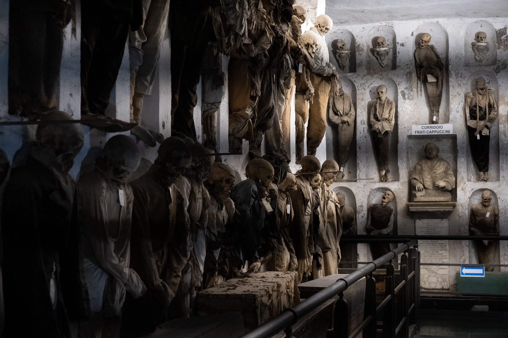

Atmosphere over event
The archive privileges emotional weather, suspended time and afterimage. Documentary value is secondary to resonance.
The Trace Archive is an evolving photographic project by Raven Olisaro. It gathers thresholds, ritual spaces, human traces, urban voids and atmospheric landscapes — selected for silence, distance and emotional residue rather than chronology.
Atmosphere comes before event. Each image enters the archive only when place and feeling align.
Thresholds, gestures, surfaces and quiet landscapes build a coherent grammar across the sequence.

A stronger project emerges when the archive follows a recognisable grammar: atmosphere, threshold, trace, ritual and silence.
The archive privileges emotional weather, suspended time and afterimage. Documentary value is secondary to resonance.
Doors, passages, windows, margins and crossings recur as visual structures. They mark the point where image becomes memory.
Presence is often indirect: a gesture, a silhouette, work in progress, a figure observed from distance, a room still holding someone.
The archive is ordered for rhythm, not chronology. Images are meant to echo one another across categories and locations.
An evolving repository of selected photographs: quiet places, suspended figures, ritual spaces, urban fragments and landscapes held in memory.
Selected works ordered for atmosphere, distance and afterimage. The archive moves from manifesto images to quieter recurrences of place, figure and memory.
Thresholds. Ritual spaces. Human traces. Landscapes as memory.
The Trace Archive is not conceived as a generic portfolio. It is a photographic project with a stable grammar: places that seem to retain memory, figures seen through distance, gestures shaped by repetition and surfaces that hold a quiet charge.
The archive remains open, but the selection is strict. Images stay only when they contribute to this visual language and reinforce the emotional continuity of the sequence.


Doors, arches, coastlines and windows return as visual passages between inside and outside, memory and presence.
People appear through work, waiting, ritual and distance. The project seeks human residue more than direct performance.

Walls, facades and voids become emotional structures. Urban space is read through silence, wear and interruption.
Fog, dusk, altitude and weather create the project’s emotional horizon, turning geography into mood and recall.
The Trace Archive is a personal photographic project by Raven Olisaro.
It focuses on places that seem to retain memory: thresholds, ritual spaces, human gestures, quiet landscapes and urban fragments. The images are selected for atmosphere, silence and emotional residue rather than documentation.
The archive moves across Europe, South America and Asia, but geography remains secondary to tone. What matters is the persistence of a feeling: a place remembered before it is fully explained.
This space is for a brief response, a note, an impression or a message about the archive. The form is intentionally simple and stays within the language of the project.